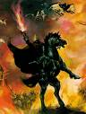

Forums galactiques > Assemblée Galactique : diplomatie officielle > L'avènement du Mal [RP]
Pages : 1
| Angnmar Respect diplomatique : 12  21/01 ETU 22:42 | Score : 8 Détails RP personel, ne pas poster
Dans l’obscurité de l’ancien monde, un spectre hantais les ruines d’un vieux château de la région d’Angmar, région froide et stérile. Le spectre attendait avec patience qu’une personne de sang noble vint pour prendre possession de son corps et dominer le monde. Mille ans en arrière, un roi gouvernait cette région, il s’appelais Karashir. Son royaume était sans précédent, son château était recouvert d’argent, symbole de sa puissance et brillait jusqu’aux confins de son empire. Le peuple lui était entièrement dévoué et lui obéissait au doigt et à l’œil. Mais plus son empire s’agrandissait, plus il devenait avide d’or et de puissance. Un jours, un homme entra, il ne dit point son nom, mais dit qu’il était un magicien du grand nord, un des ancien sorciers du Royaume du Nord. Le soir, le roi l’invita à sa table, pour savoir quel était l’étendue de des pouvoirs du mage. Le sorcier se fit discret, malgré les tentatives du roi, d’en savoir plus sur lui. Vers la fin du repas le roi, n’ayant reçu aucune réponse de sa part, et sa patience insatisfaite, entra dans une colère noire et chassa le vieux mage du château. Le sorcier , une fois à la porte lui dit: _Ton avidité de pouvoir t’as montée à la tête roi d’Angmar. Que ton royaume sombre dans l’oubli, que ton or se transforme en terre quand tu le prendra dans tes mains, ton peuple moura de la famine et de la peste! Tout ça, à cause de ton avidité roi Karashir ! Et le sorcier quitta le château pour retourner dans son pays nordique. Suite, à paraître... | ||
| Angnmar Respect diplomatique : 12 22/01 ETU 21:54 | Score : 4 Détails Les années passèrent, et le royaume se portait tout aussi bien. Mais par une journée d’automne, une épidémie de peste débuta. Au fil des mois l’épidémie fit des ravages dans la région d’Angmar. Les habitants, dépassés par l’épidémie demandèrent au roi de faire quelque chose. Mais le roi Karashir n’y pouvais rien. Il compris que la malédiction faisait effet et s’enferma dans son château avec sa cour et ses gardes. Le peuple, affamés et malades, attendaient la venue d’une aide de la part de leurs roi. Jamais elle ne vint. Alors, le peuple décida alors d’assiéger le château. Les défenses ne tinrent que une semaine. Le château fût mis à feu et à sang, puis démolis. La fine couche d’argent s’envola alors vers les cieux, et retomba comme de la neige. L’or de Karashir retourna à la terre. Il fût enfermé dans les cachots a vie et mourut peut après.
Depuis, dans l’obscurité de l’ancien monde, un spectre hantais les ruines d’un vieux château de la région d’Angmar, région froide et stérile. Le spectre attendait avec patience qu’une personne de sang noble vint pour prendre possession de son corps et dominer le monde… Suite, à paraître... |
Pages : 1
Forums galactiques > Assemblée Galactique : diplomatie officielle > L'avènement du Mal [RP]